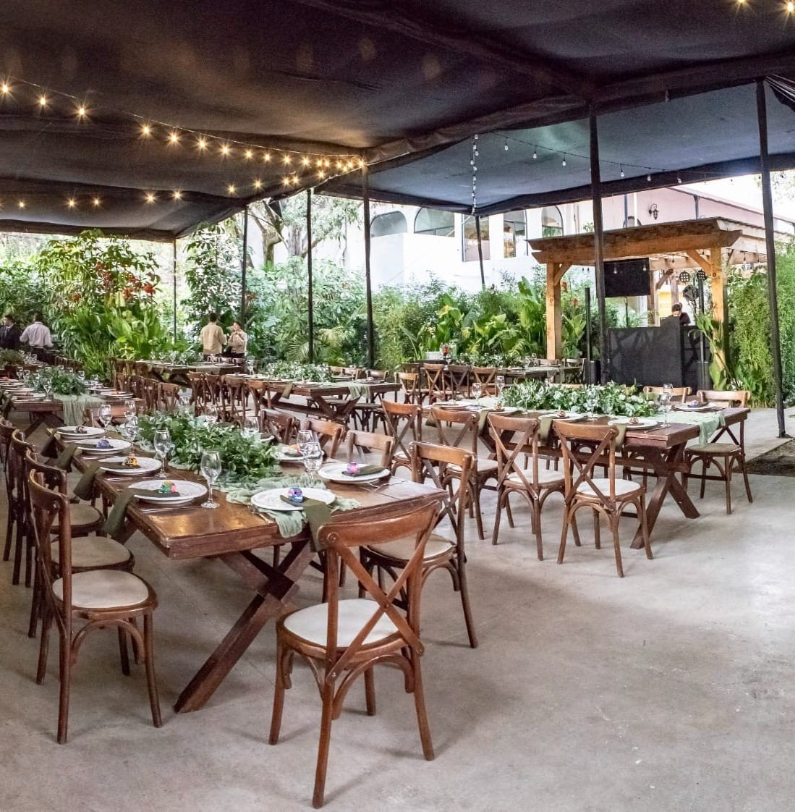

Celebraciones de fin de año corporativas en espacios distintos al salón de hotel de siempre.
Para muchas empresas, la posada es el único momento del año dedicado exclusivamente a reconocer a su equipo. Diseñamos espacios cálidos y distintos al salón de hotel de siempre, con gastronomía, música y producción a la medida de la cultura de tu empresa.

Recomendamos reservar con 2 a 3 meses de anticipación, especialmente para fechas en diciembre, cuando la disponibilidad de espacios es más limitada.
Manejamos espacios para grupos desde 30 hasta más de 200 invitados, dependiendo del lugar elegido.
Sí, contáctanos para revisar disponibilidad de espacios y logística según tu ubicación.